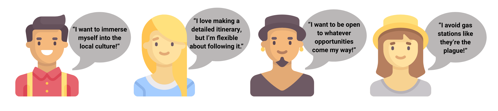
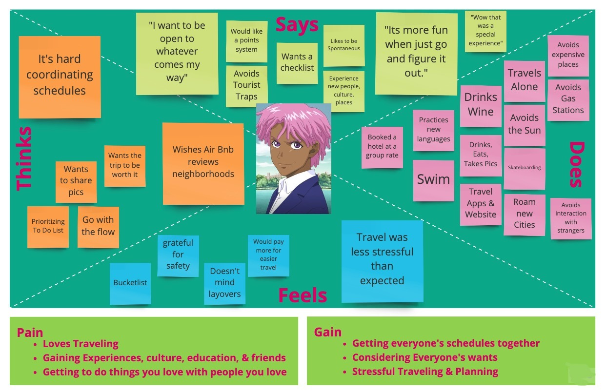
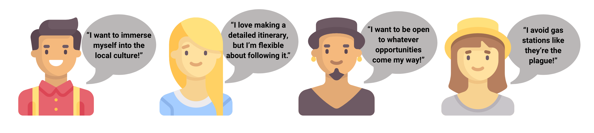
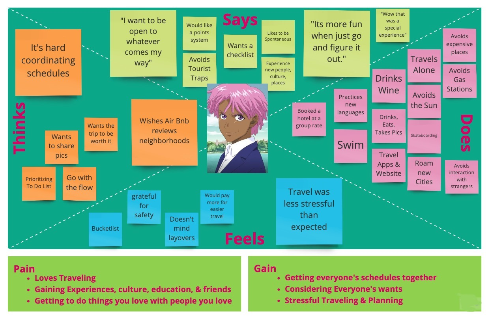
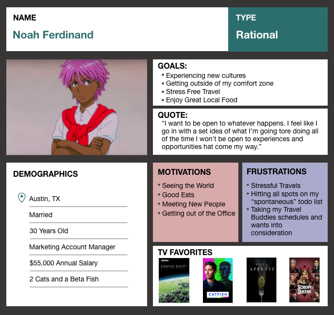
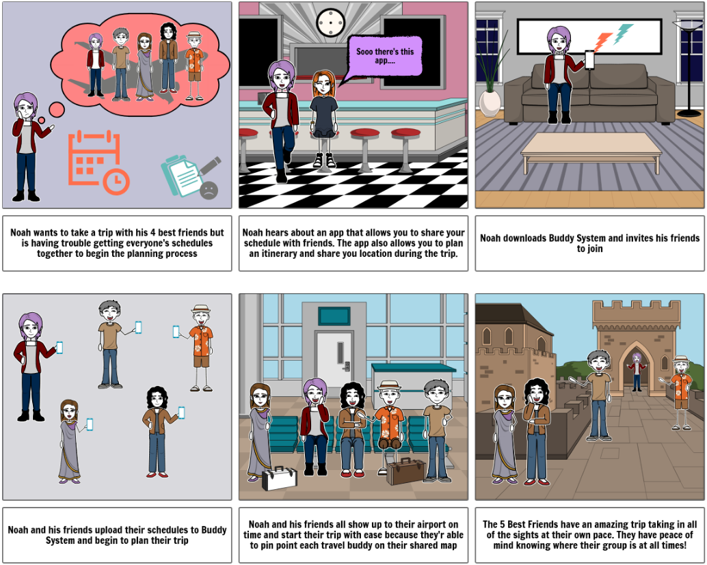
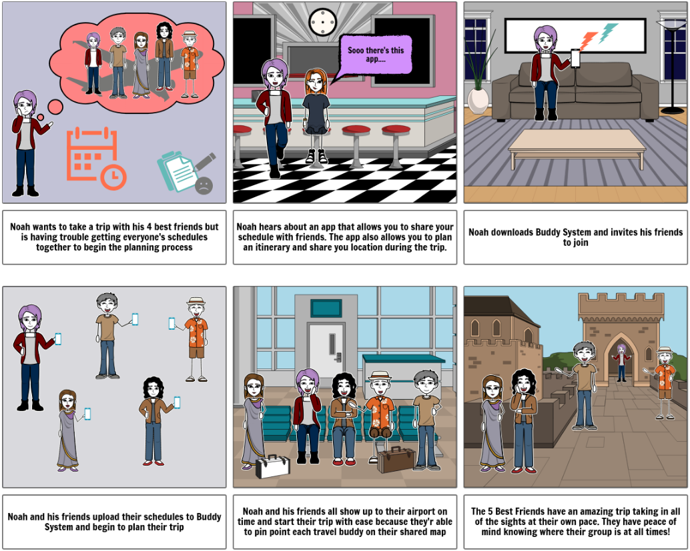
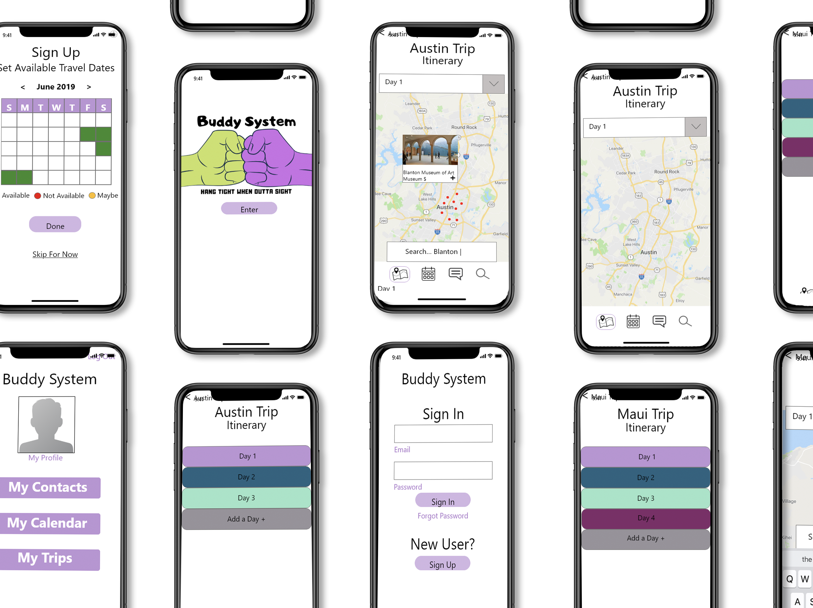
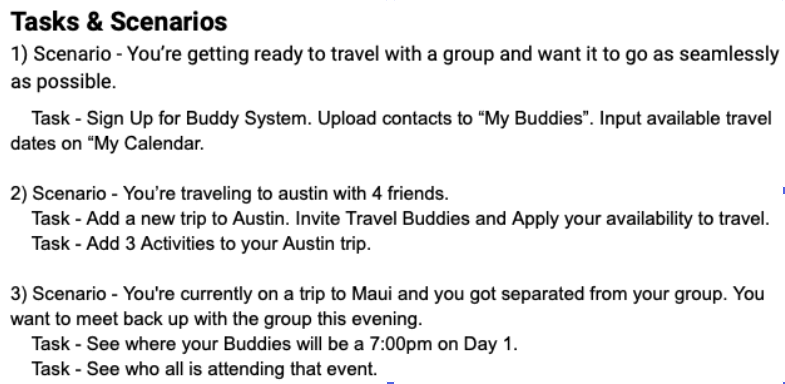
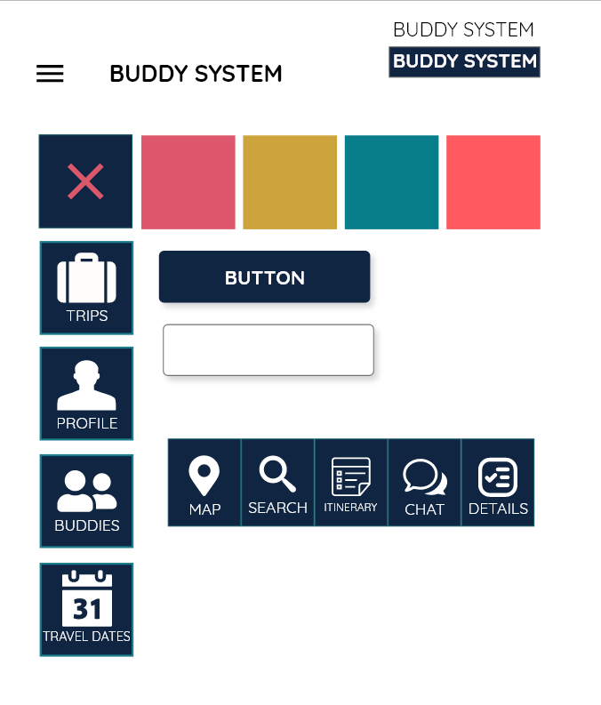

Pick a Plate
Team App Design
Recipe and Cooking App
Role: UX | UI Designer
During our research we discovered that most people love to, and want to cook at home with their friends and families most days. However, the time it takes to narrow down recipes that work for everyone’s likes, dislikes, and allergies is too time consuming.
How might we provide a simple planning process that encourages and assist users to get in the kitchen more and enjoy cooking.
We believe that by providing a simple, time efficient, planning process for our users, who want to cook more, will assist them in planning healthy budget friendly meal options that their families can all enjoy together.


Once apon a time...
I worked in an office where I serviced about 50 client's tech needs. All of these clients were unfortunately technologically challenged. My clients were traveling about 70% of the year and constantly ask me to make them some sort of shared calendar that their travel buddies could communicate through. After playing around with and setting up all kinds of shared calendar apps and websites for these clients I realized that I was actually doing research. I then set out to create Buddy System. I shared calendar/travel planning app that meets the needs of travelers everywhere!
I began by compiling all of research and additional user interviews to better understand users wants, needs, and behaviors while traveling

I analyzed these finding using an Affinity Diagram

Then used that information to really understand the user's feelings


I analyzed these finding using an Affinity Diagram
Then used that information to really understand the user's feelings


This data helped me develop Buddy System's target user, Noah Ferdinand :)

User Insights:
Noah needs a simple way to compare his friends’ schedules and wants for their upcoming trip so he can plan a stress free vacation that caters to everyone.
During my research I discovered that all subjects find planning trips around all parties’ schedules, wants, and goals one of the most difficult aspects of organizing a trip.
How might we easily gather all travel buddies’ schedules and wishlist for our trip so that Noah can plan a vacay that pleases everyone.
Problem Statement:
When planning a trip with a group it is difficult to take everyone’s schedules into account. Not only is planning travel dates around schedules tough, but it is also hard to plan the trip itinerary to please everyone’s wants and goals.

User Scenarios and Storyboards helped guide me in the design process while keeping the user in mind.
 

I then conducted research on what features were most important in achieving the Buddy System's goals.


With a clear idea of what feautures are neccessary I created a user flow. This tells me how the user will move throughout the site.

The UI Design process began with sketches. This makes an easy edit process but allows me to quickly test our features impact on the user.


I then produced low and mid fidelity mockups for user testing.


My testing plan included three scenarios and certain task for each scenario.

Three iterations were formed after sessions of user testing. Once the overall layout and concept was decided on I began accessability and color testing. I then created a styleguide and UI design
